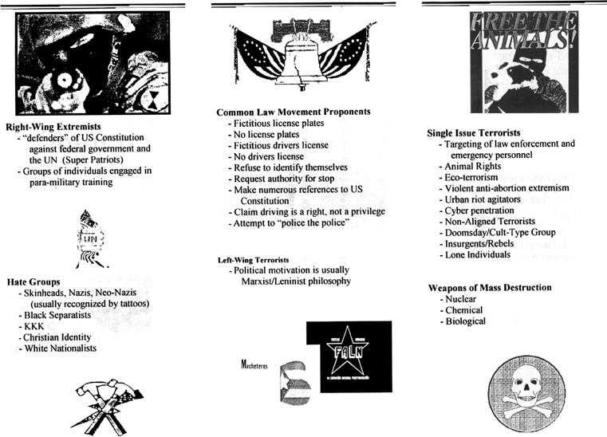

- home - Military Industrial Police State -
~
Chain Of Command
~
Interconnected, Interfaced, Federalized Chain of Command
~
CHAIN OF COMMAND
Honorable Chair, Judiciary Committee, Montana House of Representatives;
The first thing I would like to note regarding the chain of command illustrated
above is that the Secret Service is not listed as a major-sector authority. It
is listed under the Department of the Treasury, which in the chart is under the command of
the Under Secretary for Enforcement. We'll be looking into that seeming
regression of authority shortly, but, bearing that in mind, let's look at other
things of note in the above listing.
We note that the chart actually depicts the anatomy of a mechanism. That
mechanism is designed to function like a magnificent machine of precision. It is
reported by some to be the most powerful mechanism ever yet devised by mankind
throughout world history. It indeed does dominate, in many significant ways,
this planet, this world, our world. But
it is alternately either a reality or an illusion, in one way of speaking,
because the mechanism can be used in two divergent ways, depending upon its
source of control and inherent authority. And the mechanism can be viewed in
either or two contrasting ways. Ideally, the mechanism is completely
devoted to the well-being of America and the American way of life as we all know
it. Ideally it exists to bind the union and protect the liberties and freedoms
of the individual American citizen according to the U.S. Constitution and its
Bill of Rights.
That would be the ideal. Despite doomsayers who note that this world does not
function in ideal ways, all Americans seem to trust that the Federal mechanism
still works for them, for their security and prosperity, in the ideal.
This is how most Americans seem to see it today: From meat inspections to
transportation requirements; from water systems to air travel; from health
industry matters to Federal enforcement; from science to Defense, from education
to market-stability, from disaster relief to retirement issues, from “this or
that” to “everything expedient in all ways” – the mechanism is interfaced,
inter-linked, and interspersed to keep America strong and safe, a healthy and
happy nation of joyful producers, creators, and consumers who consume not only private-sector productions
but also consume government services. In so many ways, it more or less works.
Unfortunately, however, that same mechanism, allowed to fall into the wrong
hands, can be used as a device of repression against the American people. Were
it ever turned against the American people, who could stand against it? Our
founding fathers forewarned of such a fate, and put safeguards in place to
forestall tragedy. Contemporary politicians delude themselves into thinking that
they have found a way around the U.S. Constitution. Traditional financial powers
assure themselves in mirrors adjacent to board rooms and chambers that
modern-day necessity shall rule the day, and the Constitution be damned. Why,
they ponder, should an antiquated piece of paper stand in the way of
establishing the world's first utopian society throughout the world? That sort
of consciousness not only hints to us of its existence, it blares it, blurts it,
boasts it. Example: When the John Bolton yes-or-no appointment to the United
Nations debate was the news-coverage rage, the hot argument centered around
whether Bolton was the right man for the job or not. But not one damned media
featured the question about whether the United States of America has any
business or legal authority to send anyone to the UN anyway. What the
hell is the USA doing with a membership in a global governing body like the UN?
Where does this Federal government's "work-order" its founding legal document,
provide for or authorize the U.S. government to participate in any global
government body? On what legitimate authority is the USA a member in the UN? We
must get out of that body immediately, and send its headquarters packing right
out of our country, off U.S. soil.
There does exist a group of people who have shown in the past a willingness to
control America, to dictate American Policy. We have already, in this body of
letters, looked into the history of one faction of that group. That group has noted
publicly that parts of the U.S. Constitution stand in the way of their one-world
government. Were this group to gain control over the Federal government, from
within, they would surely use that control to turn our system of self-governance into
a mechanism of repression. Looking at the above masterpiece of governmental
structure, any Montanan would wisely fear such a power in an enemy's hand - or
in criminal hands. Yet when we pause to think about it, we note that the Federal
mechanism is in someone's hands. Is it in your and my hands? Or is it in
the hands of men and women who value things which would appear to you and to me
as being alien and even un-American - things like "control", "power", "excessive
wealth", "lust", "greed", "distraction", "perversion", "illusion". The symptoms
of this truth permeate our society already, and their presence shouts amid the
headlines and newscasts of the nation's media. The degradation, the perversion,
the distortion, and the abuse of every human standard of dignity and honor are
represented by respective groups of advocates, no matter how strange or even
offensive the message. I mean, the sick truth is that Jerry Springer could field
an audience in support of his insanity, and the television powers played him to
the nation. A new sort of American youth saw that travesty as being real, for
they themselves had been raised on television and thereby numbed to any
psychological assault such as the Jerry Springer Show. A wide audience appears
to have supported that show, and that should frighten any old-fashioned
American. But this has all been staged and choreographed by a small number of
insidious men.
How the average American and Montanan can know when that group of mental pirates has control is
discernible in a number of signs, and though the signs would be numerous and
would include the forced Federal income tax under a faultily-ratified 16th
Amendment, those signs would also include a national ID system and
national-level private gun confiscation. More on this topic in a future letter,
but for the moment let's focus on that incredibly powerful precision mechanism
charted above.
We want now to find out if the Federal mechanism has ever been
used to deceive the American people.
As a seemingly benign example of inherent dangers presented by a universal sense
of trust in the Federal chain of command we note that the U.S. Census markets
its freely-given information pools to industry and to private-sector business as
a matter of daily routine – its brochures boast of this by way of announcing the
agency's excellent product – information - to developers and marketers and
financial interests. It also markets its product – information - to any
government agency with a wish to know. The U.S. Census is pleased with itself.
The U.S. Census has little if any concern, as an agency on a mission, about any
particular series of Executive Orders or Presidential Decision Directives or
National Security Directives issuing from the Executive. For example, if FEMA
were to ring up the U.S. Census and request a ten-year pattern of
home-purchasing trends in a region, the U.S. Census is glad to oblige. The U.S.
Census does not care one whit whether FEMA may need that information for future
planning as may regard a particular activity which is only hinted on the above
chart – COOP.
Of interest, we note in passing that COOP is tucked neatly away under the benign
agency known as the Department of the Interior. Nothing to worry about there,
right? But what is “COOP”? And why would COOP be officially designated to reside
under the Department of the Interior? COOP is: Continuity Of Operations Program.
Another relative term, in the political vernacular, is COG – meaning “Continuity
Of Government”. Are the two related? The chart does not say. Perhaps the
Interior Department's COOP is simply a miniature replica of Continuity Of
Government. But, whatever, we do note that COG is not listed in the above chart.
Does COG exist? We shall look into that in this letter. First, let's talk a
moment about all those people who work for all those agencies and their networks
of satellite agencies and their interfaces with State and Local government
agencies. Let's think about those government employees.
Government Employees
Among all of the agencies and offices, among the many training centers,
conference rooms, command centers, hallways, public rooms, maintenance and
logistics rooms, among all the meeting rooms, security and communications
operations rooms, amid mazes of interlocking agency hierarchies, every day we
find working like busy little beavers the countless people who compose the
massive, combined government personnel pool. I have no idea how many government
employees presently draw salaries and paychecks from the Federal government, but
I'm certain that figure would surprise anyone. But whatever that number might
be, and despite the hopeful notion of Harry Browne who states that about sixteen
people should be all that are required to run the Federal government, we presume that without the droves of government employees the entire
infrastructure of the Federal mechanism could not function.
The people who comprise this massive personnel pool may, for our purposes as we
look into the existence of terrorism on U.S. soil, be divided into three
distinct groups. The first group, which is by far the overwhelming majority of
government employees, still thinks, as a group, that the terrorism which has
plagued American soil in recent years was created abroad as a symptom of a clash
of civilizations. This group of government employees believes that U.S. official
Policy had nothing to do with it. Actually, they are partially right, concerning U.S.
official Policy. But they overlook, usually, the reality of
U.S. un-official Policy – and there is the rub. Fraudulent Policy, while
claiming official validity, is in reality un-official Policy, for it does not
derive from the consensus of an informed public, which contradicts the authority
upon which the Federal government's own founding legal charter must rest – that
is, the Federal government's sole source of legitimacy, which we all agree must
be the informed consent and will of the people. A dead President nailed
it wisely when he spoke this:
"We, the People are the rightful masters of both Congress and the courts -- not to overthrow the Constitution, but to overthrow men who pervert the Constitution." ~ Abraham Lincoln
A deceived people, as we all
know, cannot properly legitimize a democratic process within a Republic of law.
That is primary and default on every matter.
This first group of government employees believes sincerely that no one working
inside the U.S. Federal government would or could orchestrate terrorist events
on U.S. soil. As the great, overwhelming majority of government employees, they
see “the terrorists” as the “enemy”, but they refuse to question whether the
terrorists are themselves erected and directed by provocative government
employees working inside various secret Federal offices and agencies.
They believe in the infallibility of governmental institutions so strongly that
they refuse to entertain any other explanation regarding the origins and
intentions of “the terrorists”. They refuse to question their views on
“terrorists”. They refuse to question their views on the sanctity of government
offices. They refuse to question the possibility of a secret government working
inside the overt government. They refuse to consider that it is very possible
that a criminal-minded sociopath could obtain a high-ranking government office
title and chair for himself. They refuse to consider that more than one criminal
could have become entrenched in very high seats of governmental power. Their
refusal works to the advantage of the criminal cabal, dubbed by Webster Tarpley
as the “rogue network” One reason, of course, why most government
employees see things the way they do is because the criminal cabal itself
orchestrates and presents the official government position on such matters.
Example:
And here's the anti-thesis to what Lincoln said above. This was filmed as it was spoken at the UN by a member in the globalists' Skull and Bones secret society shortly after the attacks of 9/11:
"Let us never tolerate outrageous conspiracy theories concerning the attacks of 11 September---malicious lies that attempt to shift the blame away from the terrorists themselves, away from the guilty.” ~ George Walker Bush
I am only guessing here, of course, am just basing this on my own recalled
loyalty to the government when I was a U.S. Marine, but to me it seems that it
must strike these loyal, dedicated government employees as treasonous and even
impossible to dare think that one or several of the agencies or offices of the
massive interlocking governmental behemoth of conjoined and organized Federal
offices and agencies could harbor a relatively small but very powerful cabal of
people who would consciously seek to control the government from within, would
seek to control government for sinister purposes, and would resort to literally
creating terrorism as a means of solidifying their control and accomplishing
their purposes. I did believe that myself, very strongly, when I was on active
duty. I was taught to see things that way, to be loyal, to refrain from
questioning authority. I was willing to accept that doctrine because I loved my
country and respected its government. A line from a popular country-western song comes to
mind: “wish I didn't know now what I didn't know then”.
This sort of government employee cannot imagine, for example, that FEMA might be
under the control of a secret cabal which has infiltrated our highest seats of
authority and could be, behind its face of service in the wake of disasters,
literally studying, as we speak, the logistics and challenges of building a
temporary city, or several temporary cities, which would support one million
inhabitants each in the event of a “national emergency”. What is now known,
thanks to Peter Dale Scott, is that government outsourcing has arranged a
multi-million dollar contract with Halliburton - on contingency - to build
temporary holding camps for U.S. citizens. That is no longer rumor, but is a published fact. As we may recall,
Hitler was big on such camps. As we now know, FEMA has been tasked with such
studies. One wonders what the government knows – which would prompt such a study
- but is not sharing with we the people?
These loyal government employees feel that they have every reason to believe official
government-issued statements regarding just who the enemy is, and they feel that
they have
every reason not to question that official story. A complicit mass media
reassures and reinforces that sentiment daily, as we all now know. Government
employee training courses also reinforce that sentiment. We recall the smuggled
film footage found on Alex Jones' famous film, “911: The Road To Tyranny” (See
Bibliography, 911: The Road To Tyranny by Alex Jones), in which a FEMA instructor is caught on film telling a class of
fire-fighters and policemen that our Founding Fathers and Christians were/are
“terrorists”. He is caught on film telling that class of public servants that
the Christians “believe they are right, just as much as you believe that you are
right”. [my paraphrase] His class was designed to further demarcate the line
between citizenship and government employment. The FEMA instructor was preparing
the fire-fighters and policemen in his class to see any Christian as potentially “the
enemy”. As with every film listed in these letters, I shall furnish
to the Committee this footage of FEMA tyranny being taught in a government
classroom.
All the while, the FBI has shown trends of marching to the same drummer as now
marches FEMA. We recall the 1999 Megiddo Report, circulated widely by FBI to
local and state law enforcement offices, in which certain types of Christians
were characterized as potential terrorists. Another document of perhaps even
more ominous portent is the classic FBI pamphlet sent to law enforcement offices
nation-wide at the first of the new millennium. This pamphlet suggests that any
American who mentions the Founding Fathers or the U.S. Constitution is likely to
be a terrorist-sympathizer. Unbelievable?

This piece of work was dreamed up by the FBI in 1999 and 2000 and sent to law enforcement
agencies to help law enforcement officers recognize potential terrorists.
According to the “Common Law Movement Proponent” list, I'm a damn terrorist for
believing one simple fact of history – that the U. S. Constitution is this Federal government's founding legal charter. Subsequent to my
understanding of that fact comes quickly on its heels the additional fact, which
I firmly believe and accept, that
the Federal government is required by law to operate within the limitations set
forth by the Constitution as ratified by the several states. Being no longer the
young fool who once proudly went off to war for that government, I today have a
serious problem with any Federal agency which operates in such disregard for its
sole source of legitimacy and authorization.
I am certain that I do not need to mention the Fourth Amendment to this
Committee, but I would love to know what each member of the Committee thinks
regarding my dedication to this nation's founding legal charter. Am I a
criminal, a terrorist, or a terrorist-sympathizer for expecting the Federal
government to operate within its legal limitations as provided in its founding
legal document? And what may we say of the newly-sprung marvel in Montana known
as “random traffic stops and check points” where my “papers please” are
un-Constitutionally demanded? Doesn't that smack of Nazi Germany and Communist
Russia? Is that not a direct violation of the Bill of Rights? I assure each
member of the Committee that that sort of nonsense is not the reason I put on
the uniform of the United States Marine Corps and went off to war so long ago. I
did not fight to defend the Federal government's auto-empowerment to abuse its
citizens in the same manner in which their respective governments abused the
German and Russian citizenry.
A second group of employees within the huge bureaucratic government behemoth is
infinitely much smaller – this group is commonly referred to as
“whistle-blowers”. They are generally rare. Examples of whistle-blowers who do
question the official government story on terrorism are relatively few, but
still plentiful enough to note. These government employees, most of whom quickly
become
“ex-government employees” after they've courageously blown the whistle, are
discouraging and unsettling to the closed minded and more loyal government
employees comprising the majority of government employees. Their willingness to expose incompetence and criminality by
government employees is also a direct threat to the rogue network. Pressures of
a severe nature are often brought to bear upon courageous whistle-blowers.
A quick reading of the “Clinton Hit List”, that is, a listing of men who were
too knowledgeable of Clinton's crimes and who subsequently suffered “suicides
and/or plane crashes” within the first two and a half years of the Clinton
Presidency, is sufficient to hush-up most would-be whistle-blowers.
[See list of victims in Bibliography, Documentary Films: The Clinton Chronicles.]
Also contributing to the overall smallness of this group of government employees
and former government employees are the direct actions of so-called loyal people inside
government agencies who threaten would-be whistle-blowers with punishment, loss
of career employment, loss of government benefits, loss of retirement benefits,
jail time, fines, and, in some cases which are documented, outright threats of
physical harm to the would-be whistle-blower and/or his/her family.
Another tactic used by so-called loyal government employees against would-be
whistle-blowers is the use of court orders, and U.S. Department of Justice “gag
orders”, such as have been laid down hard upon former FBI employee Sibel
Edmonds, who has been prevented from testifying in Federal lawsuits for which
she has been legally subpoenaed.
The case of Victor Marchetti is another example. By resigning his high post
at CIA and announcing that he intended to publish a book revealing CIA
criminality, he became the first American to be censored by a Federal court
before publication of his book. In 1974 the Federal court system, at CIA's
demand, ordered Marchetti to obtain permission from the CIA before he could
publish anything he wrote and before he gave any speech anywhere. His manuscript
was given to the CIA for thirty days, during which time CIA was allowed to purge
any passages which CIA felt might embarrass the agency or the Federal
government.
When Mr. Marchetti resigned from the CIA after a successful career, he was the
executive assistant to the Director of Clandestine Services, a very high
position. He gave up his career in CIA because he felt that the American people
had a right to know what was being done behind their backs by an agency which,
from his perspective atop the agency, had grown completely out of control. His
resignation came more than a decade after the President who signed into law the
National Security Act of 1947, President Harry Truman, said the following:
"For some time I have been disturbed by the way CIA has been diverted from its original assignment. It has become an operational arm and at times a policy-making arm of the Government. This has led to trouble and may have compounded our difficulties in several explosive areas.
"I never had any thought when I set up the CIA that it would be injected into peacetime cloak and dagger operations. Some of the complications and embarrassments that I think we have experienced are in part attributable to the fact that this quiet intelligence arm of the President has been so removed from its intended role that it is being interpreted as a symbol of sinister and mysterious foreign intrigue – and a subject for Cold War enemy propaganda.
"With all the nonsense put out by Communist propaganda about “Yankee imperialism”, “exploitive capitalism”, “war-mongering”, “monopolists” in their name-calling assault on the West, the last thing we needed was for the CIA to be seized upon as something akin to a subverting influence in the affairs of other people....
"But there are now some searching questions that need to be answered. I, therefore, would like to see the CIA be restored to its original assignment as the intelligence arm of the President, and whatever else it can properly perform in that special field, and that its operational duties be terminated or properly used elsewhere.
"We have grown up as a nation, respected for our free institutions and for our ability to maintain a free and open society. There is something about the way the CIA has been functioning that is casting a shadow over our historical position, and I feel that we need to correct it."
~ above quoted passages are by President Harry S. Truman, December 22, 1963
As
executive assistant to the Director of Clandestine Services, Mr. Marchetti was
“in the loop” on much CIA criminality, and his conscience finally caused him to
come forward to the public. His book, co-written with John D. Marks of the State
Department's Intelligence section, is the now-famous The CIA And The Cult Of
Intelligence. (5) Anyone may buy that book today, but readers should expect to
overlook the many deletions which CIA purged from the manuscript in the name of
National Security.
One further example of a whistle-blower speaking out is that of former FBI Field
Agent Robert Wright, who was reprimanded for going outside the FBI to the CIA
with information, prior to 911, which could have prevented the attacks of 911.
His career has been destroyed, his character has been demonized, and his
credibility has been demolished, despite the fact that the very honorable David
Schippers is his legal counsel. (6) Worse, three traitors in the FBI's Radical
Fundamentalism Unit, David Frasca, Marion Bowen, and Michael Maltby, received promotions and
financial gains after 911, despite their efforts to shut down Mr. Wright's
investigation of al Qaeda operations here in America prior to 911. More on that
elsewhere.
So there is a great majority of so-called loyal government employees, on the one hand,
which presents a compliant wall of denial which blocks much good work by the
handful of whistle-blowers who, on the other hand, might otherwise come forward
to make public disclosures. The disclosures would range from simple negligence
and incompetence to abuse of power, and even to treasonous activities within
seats of government power. This of course plays directly against transparency in
our government, and empowers a useful atmosphere of secrecy in which a criminal
cabal may operate.
The third group of government employees is the actual cabal of co-operating
criminals who abuse their offices and betray the public trust for secretive
purposes which are extremely difficult to expose, and which are even more
difficult to prove. This group is larger in number than the whistleblower group,
but very much smaller yet than the mass of trusting, programmed, and
well-trained government employees. These are the people who consciously lie, willfully deceive
the American people, deliberately manipulate perception, and lever the powers of
government for their (and for their “owners”) purposes. Webster G. Tarpley calls
this group of treasoners "the rogue network", and states that they extend across
numerous inter-related government agencies from the NSA to the CIA, from the
Pentagon to the State Department, from the Justice Department to the White
House.
Involved at this level of government employment are many advocates of the
“secret government”, people who support the concept of “Continuity Of
Government” about which we are expected not to know, nor even ask, anything.
These are the criminals who take their marching orders from the private-sector
think-tanks such as the Trilateral Commission, the CFR, the PNAC, the American
Enterprise Institute, the Federal Reserve System, Inc., and etc. These are the
criminals who work devotedly toward implementing the one-world government, which
is by definition the death of the United States of America. These are the people
who lever and manipulate government Policy for the benefit of those
internationalists who govern Wall Street and the global banking hierarchy.
This group of government employees includes despicable examples such as John
Poindexter, Oliver North, George Herbert Walker Bush, Felix Rodriguez, William
Jefferson Clinton, John Negroponte, Donald Rumsfeld, Colin Powell, Condoleezza
Rice, Paul Wolfowitz, Vice President Richard Cheney, Janet Reno, Barry
McCaffrey, the Dulles brothers, and a host of others. Their private-sector ties involve Carlyle
Group, Dyncorp, Monsanto, General Electric, IBM, Ford, Exxon, Halliburton,
Kellog-Brown-Root, Citibank, Chase-Manhattan Bank, Bechtel, and a host of others
including the Harvard Trust and Goldman-Sachs. The list is long and impressive. Speaking
generally, we may call that private sector collective of corporate giants “Wall
Street”.
The roots of that briefest listing of private-sector players which influence
government go directly back to rascals such as Robert Morris, Alexander
Hamilton, General Albert Pike, Judah Benjamin, August Belmont, the Houses of
Russell, Low, Weld, Edwards, Delano, Forbes, and the rest of the 19th Century
opium syndicate of New England. Indeed, its hierarchy traces from our very
Constitutional Convention across the span of American history. Some call it
today: the “Eastern Establishment”, although its roots have spread. It is also
called the Anglophile Establishment or the Anglo-American Establishment. It
constitutes what Lyndon LaRouche has dubbed “The English-American Special
Relationship”, and its lineage is traceable down through American history, where
its roots in European banking circles are revealed.
Personal perceptions which have been mandated to “loyal employees of the Federal
government” are an intrinsic obstacle to the revelation of the truth concerning
911 and other terrorist activities in the United States of America. It is a
problem. I do not know how to solve that problem, for the last thing any loyal
government employee is likely to do is to question the very authorities for
which he works. For example, he is not likely to pick up this collection of
letters and read it with an intent to understand and comprehend, because to do so would fly in the face of
what he perceives to be loyalty
to the government. You and I may now see that his "loyalty" is actually
"misplaced loyalty"; but today's average government employee may not yet
recognize that subtle reality. Many, perhaps most, government employees simply do not
want
to know. I can understand that, especially in light of the massive and perpetual
mind-washing, conditioning, programming, mass-distraction, and general
Feducation which is constantly bombarding these government employees. It is as
J. Edgar Hoover himself once said -
“The individual is handicapped by coming face to face with a conspiracy so
monstrous he cannot believe it exists.”
~ J. Edgar Hoover
- home - Military Industrial Police State -